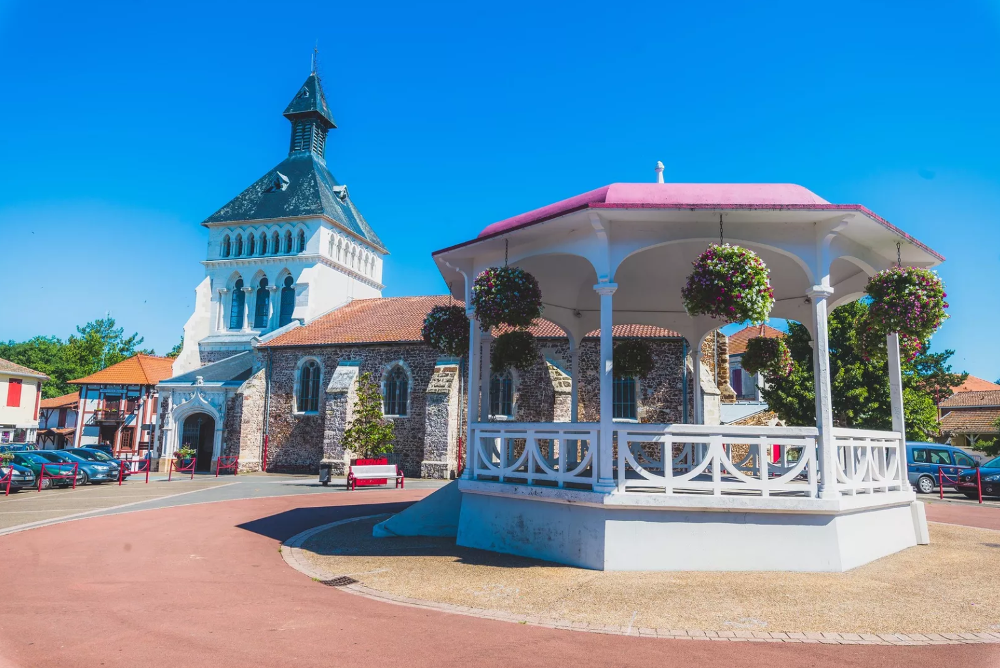

Parentis-en-Born
Une destination proche et agréable pour se promener, profiter du lac, découvrir le centre et accéder facilement à des restaurants et marchés locaux.
Astuce : parfait pour une sortie simple sans faire beaucoup de route, notamment en fin de journée.
📍 Voir sur la carte